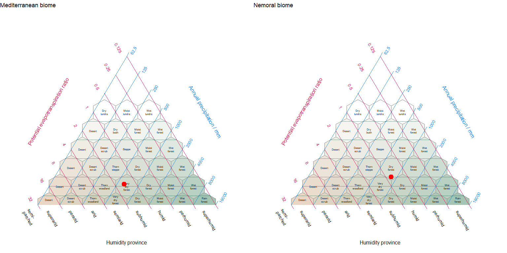

R functions for downloading, extracting, and plotting climatological data as a function of user supplied multi and single geospatial polygon and point data.
Description
If you are a scientist seeking a convenient solution for downloading, extracting , and plotting climatological data, consider exploring the features of this package. It grants you access to three widely recognised modelled data sets, namely WorldClim 2, CHELSA, and NASA’s SRTM. It seamlessly handles both multi and single geospatial polygon and point data, allowing you to extract outputs that can serve as covariates in various ecological studies. It also allows you to visualise these extractions using two common graphic options – the Walter-Lieth climate diagram and the Holdridge life zone classification scheme. The last option is a scheme of our own design which incorporates aspects of both Walter-Leigh and Holdridge. The package’s user-friendly access and extraction of globally recognisable data sets significantly enhance its versatility and usability across a broad spectrum of applications.
For any questions, comments or bug reports please submit an issue here on GitHub. Suggestions, ideas and references of new algorithms are always welcome.
Main functionalities
- Downloads climate data from two main sources;
- CHELSA, short for “Climatologies at High resolution for the Earth’s Land Surface Areas,” encompasses a high-resolution gridded dataset containing extensive climate data, including temperature and precipitation for the period 1981–2010
- WorldClim 2, short for “World Climate”, is a comprehensive global dataset offers fine-scale gridded climate data including temperature and precipitation for the period 1970–2000
- Downloads elevation data from two main sources;
- SRTM, which stands for ‘Shuttle Radar Topography Mission,’ refers specifically to the hole-filled CGIAR-SRTM dataset, providing 90-meter resolution elevation data for the Earth’s surface within latitudes ranging from -60 to 60 degrees
- Mapzen’s synthesis digital elevation product which combines several sources of digital elevation models, including SRTM, the ArcticDEM (covering all areas north of 60°), EUDEM (digital elevation model over Europe)
- Extracts the data;
- as raw data for points
- as zonal statistics for a group of points or over a spatial extent (polygon)
Installation from the source
You can install the development version from GitHub with:
# install.packages("devtools")
devtools::install_github("jamestsakalos/climenv", build_vignettes = TRUE)Example
This is a basic example which shows you how to use the main climenv function:
library(climenv)
# Step 1. Import the Sibillini National Park Boundary
# Step 2. Run the download function
# Step 3. Run the extract function
#* See ce_download & ce_extract documentation
# Steps 1, 2 & 3 can be skipped by loading the extracted data
data("it_data")
# Step 4. Visualise the climatic envelope using a Holdridge diagram
p1 <- plot_h(data = it_data, "MED")
The package vignette provides detailed explanation and demonstration on the application of climenv.
References
Fick, S.E. & R.J. Hijmans. (2017). WorldClim 2: new 1km spatial resolution climate surfaces for global land areas. International Journal of Climatology. 37, 4302–4315.
Hijmans, R.J., Barbosa, M., Ghosh, A., & Mandel, A. (2023). geodata: Download Geographic Data. R package version 0.5-8. https://CRAN.R-project.org/package=geodata
Hollister, J. (2022). elevatr: Access Elevation Data from Various APIs. R package version 0.4.2. https://CRAN.R-project.org/package=elevatr
Karger, D.N., Conrad, O., Böhner, J., Kawohl, T., Kreft, H., Soria-Auza, R.W. et al (2017) Climatologies at high resolution for the earth’s land surface areas. Scientific Data, 4, 170122.
Karger, D.N., Conrad, O., Böhner, J., Kawohl, T., Kreft, H., Soria-Auza, R.W. et al. (2021) Climatologies at high resolution for the earth’s land surface areas. EnviDat.